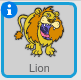
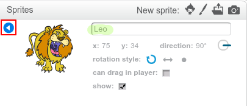

To rename a sprite in Scratch, click on the i on the sprite:

This opens the info panel. You can also right-click on a sprite and choose info.
info

You can edit the name of the sprite and then click the triangle to close the info panel.